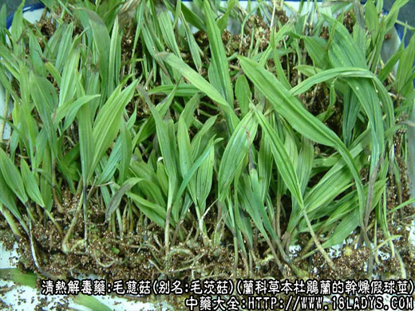
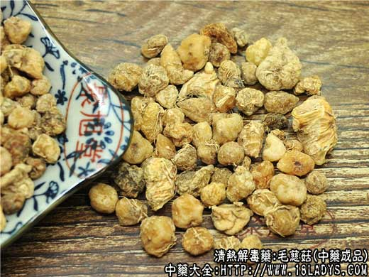
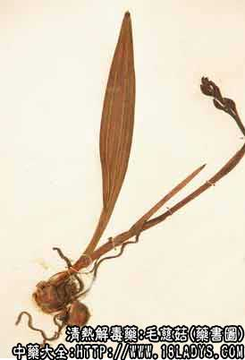
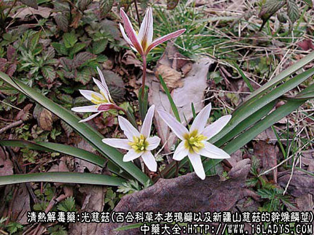
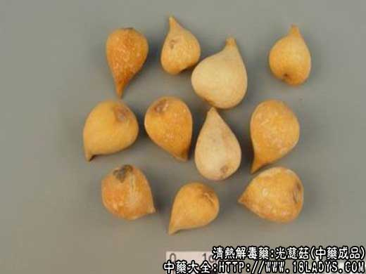
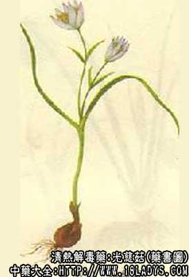

本品为较常用中药，列于宋《开宝本草》。商品有两种：一为兰科植物的假球茎。因其形似水生慈菇的根茎，而生于山中故名山慈菇，又因其表皮带有残留叶基纤维毛，故又名毛慈菇。二为百合科植物的鳞茎，光洁粉质，习称光慈菇，两者在津京地区分别使用。
一、毛慈菇
别名：茅慈菇、毛茨菇。
来源：为兰科多年生草本植物杜鹃兰的干燥假球茎，野生。
产地：主产于四川、贵州、云南等省。
性状鉴别：呈不规则的块状或球形。直径约1.5～2.5厘米。顶端突起微尖。底部稍平坦微凹陷，呈凹脐状，常留有残断的须根。表面阴黄色或黄褐色，有不规则的纵皱纹。中部有2～3个节环纹（俗称腰箍），环纹上有丝状纤维毛。质坚硬，断面黄白色，角质状半透明，气微，味淡，稍带粘性。
以个粒大，均匀，色黄明亮者为佳。
主要成分：含粘液即葡萄糖配甘露聚糖果。
药理作用：清热、解毒、散结。其原理为：1、本品有强心作用；2、抗癌（有效成分为秋水仙硷）。此外，以山慈菇为主药的玉枢丹，对流行性感冒的病毒有抑制作用。
炮制：打碎，生用。
性味：甘微辛、寒。
归经：入肝、胃经。
功能：清热解毒，消肿散结。
主治：实热性痈肿，痈疽发背，疔毒疮疖，瘰疠结核，无名肿毒。
临床应用：1、用于外敷痈肿疔疮。配麝香、五倍子等，制成紫金锭（玉枢丹），局部外涂治腮腺炎较好。
2、用于治疗癌肿，较多用于乳癌。用紫金锭配王不留行、银花、冰片，如乳癌方。
用量：内服9～15g，外用适量。
处方举例：1、紫金锭（成药）：含山慈菇，红芽大戟，五倍子，麝香，千金子，糯米作锭，外用。
2、乳癌方（安徽省人民医院方）：紫金锭4锭，冰片0.6g，银花30g，王不留行30g，猫眼草30g，先把后三种制成浸膏干粉，然后加入前二种，研细和匀，每次服1.5～3g，每日4次。
二、光慈菇
别名：光菇。
来源：为百合科多年生草本植物老鸦瓣以及新疆山慈菇的干燥鳞茎，野生。
产地：主产于安徽、河南、陕西、新疆等省。
性状鉴别：鳞茎圆锥形，顶端渐锐尖，形如桃。高约1～2厘米，最大直径0.8～1.5厘米。表面黄白色光洁，基部略凹陷，一侧有纵沟纹一条。质坚硬稍脆。断面黄白色，粉质，中央有圆锥形心芽一枚。气微，味淡。
以个粒均匀，色白净光洁者为佳。
注：1、关于光慈菇的功能主治说法不一，多数认为与毛慈菇相同，有的则认为光慈菇，能温补气血，治气血不和，肺虚咳嗽，脾虚作泄，里气不足。其疗效是否一致，尚待进一步研究。
2、川云贵等地产之冰球子为兰科植物独蒜兰的假球茎，形状色泽略与杜鹃兰球茎相似，唯体较细瘦上部突起较高而尖，中部无环纹，底部有环纹二圈，不太明显。按上海出版的《药材资料汇编》有关山慈菇的叙述中说：“另有一种伪品较冰球子（又称冰结子）”，性状与山慈菇相似，惟色泽稍淡白，主要点它是没有腰箍。江、浙地区绝对不销，其原植物究属何种，尚未了解”。按上述品种京津地区过去也不习销，但在60年前已作为毛慈菇的同类品正式使用。
以上毛慈菇，光慈菇外还有一种云南百合科丽江山慈菇，其形态与光慈菇相似，唯鳞茎呈不规则块状，表皮不甚光洁，除有一条较明显的纵沟纹外，另有数条不甚明显的纵沟纹，顶端不甚突尖。质较光慈菇略坚实，断裂后内部无芽心，气微，味微苦辛。据报导其鳞茎含有大量秋水仙硷，性温，味苦，有毒。能散寒、平喘、止咳化痰。治支气管炎哮喘。外用可敷痈肿。据报导秋水仙硷有治癌作用。